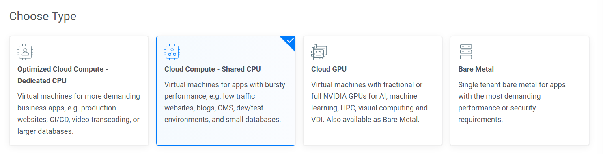

如何购买VPS并使用SSR科学上网
众所周知，中国大陆需要使用科学上网才能访问外网。这些手段中有一个相对比较稳定的是使用SSR，即ShadowsocksR。想要使用SSR，我们需要一个VPS（Virtual Private Server，虚拟专用服务器）提供商。本文记录了本人购买Vultr VPS，并设置SSR的过程。
注：本人使用SSR科学上网是为了在回国期间使用学校邮箱，实属无奈之举，请读者遵循所处当地的法律法规合理使用。
购买并部署VPS
VPS商家有很多，本人选择的是Vultr。Vultr的网站为英文，必要时，可以使用网页翻译插件。在Vultr官网注册账号，然后添加付款方式。Vultr支持的付款方式有：信用卡、Paypal和支付宝。
在Vultr主页，点击右上角的Deploy，选择服务器种类，因为SSR不会占用大量CPU资源，所以这里可以选择最便宜的Cloud Compute - Shared CPU。

选择服务器所在地区，我选择了Osaka（大阪）。通常来说，离用户所在地区越近，延迟越低。日本，香港，新加坡都是不错的选择。
因为我比较熟悉Ubuntu，所以操作系统我选择Ubuntu 22.04。
选择计划这一步，选择最便宜的 25GB NVMe 即可。可以把自动备份关掉。其余的选项默认就好。我的最终的价格为每月$6。
选择好计划后，点击Deploy Now。然后等待服务器安装完成。
服务器安装好后，在主页，点击服务器右侧的三个点图标，选择Server details。在里面能看到服务器的ip地址（xxx.xxx.xxx.xxx），Username（通常是root），和password。这三个值在部署ssr时会用到。
部署SSR
在服务器上部署SSR，需要先安装SSR的软件。这里推荐使用SSR一键安装脚本。
首先，使用SSH连接到服务器。Mac和linux系统可以打开终端，Windows系统可以使用Putty，或者WinSCP，通过ssh链接到服务器。vscode也提供SSH连接功能。
在终端中输入以下命令：
1 | ssh root@<ip地址> |
然后输入密码。当看到终端显示 root@vultr:~#
时，说明连接成功。
如果总是连接不上服务器，说明此ip地址已经被墙，新建一个VPS服务器，然后将原来的服务器删除即可。
在终端中运行以下命令，安装并运行SSR安装脚本：
1 | wget -N --no-check-certificate https://raw.githubusercontent.com/ToyoDAdoubi/doubi/master/ssr.sh && chmod +x ssr.sh && bash ssr.sh |
脚本运行后，会显示中文的安装菜单。选择1，安装SSR。这里需要用户输入端口号，密码，加密方式，协议，混淆。
端口号和密码任意输入，加密，协议和混淆按照脚本的建议任意选择就好。其余的选项默认即可。
部署好SSR之后，在需要科学上网的设备上，安装SSR客户端。ios系统可以登录非中国大陆的apple id，在app store下载shadowrocket（需要花一点钱）。安卓系统可以下载SSRR。
Windows系统可以下载的客户端有很多，在Github上搜索SSR，可以找到很多可以使用的项目。我使用的是shadowsocksr-csharp
下载后，在客户端中，输入服务器ip地址，端口号，密码，加密方式，协议，混淆，保存。启动代理，即可科学上网。
Vultr的VPS配的SSR的速度还是可以的。国内测试延迟为220ms，在加拿大测试延迟为120ms左右，虽然不能用来打联机游戏，但是回邮件还是足够的。
后续更新：
2025-01-14：我Vultr的VPS的ip地址被墙了，连着试了好几个ip地址都不行。我一气之下买了Betternet。现在我的VPS只用来挂Tennisbot。